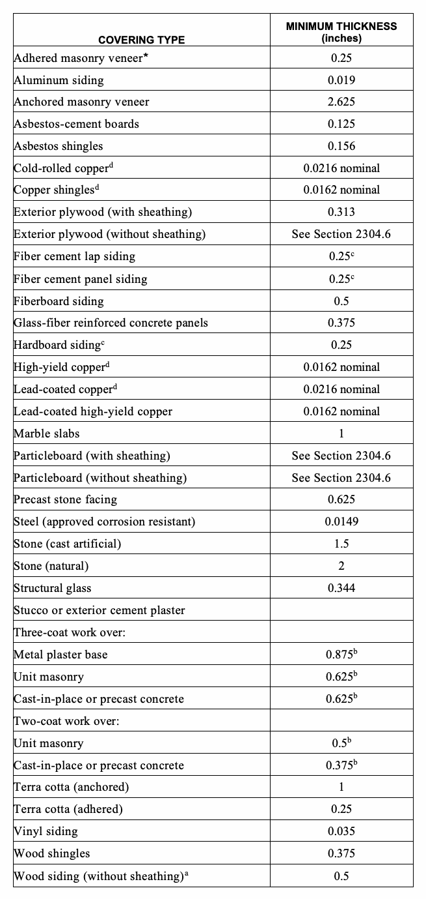
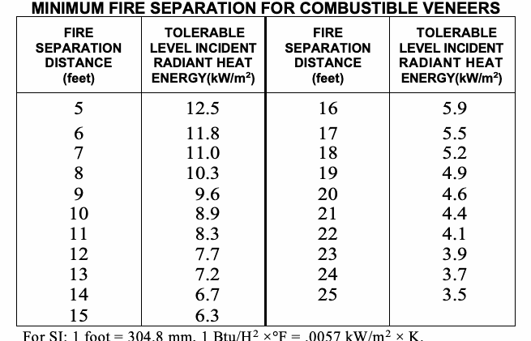

The provisions of this chapter shall establish the minimum requirements for exterior: walls; wall coverings; wall openings; windows and doors; architectural trim; balconies; projections; and other appendages.
The following words and terms shall, for the purposes of this chapter and as used elsewhere in this code, have the meanings shown herein.
ADHERED MASONRY VENEER. Veneer secured and supported through the adhesion of an approved bonding material applied to an approved backing. ANCHORED MASONRY VENEER. Veneer secured with approved mechanical fasteners to an approved backing. BACKING. The wall or surface to which the veneer is secured.
*BIRD FRIENDLY MATERIAL. A material or assembly that has, or has been treated to have a maximum threat factor of 25 in accordance with the American Bird Conservancy Bird Collision Deterrence Material Threat Factor Reference Standard, or with the American Bird Conservancy Bird-friendly Materials Evaluation Program at Carnegie Museum’s Avian Research Center test protocol, or with a relevant ASTM standard.
*Section BC 1402.1 was amended by adding BIRD FRIENDLY MATERIAL in Local Law 15 of 2020. This law has an effective date of January 10, 2021.
*BIRD HAZARD INSTALLATIONS. Monolithic glazing installations that provide a clear line of sight on the exterior of buildings, including, but not limited to, glass awnings, glass handrails and guards, glass wind break panels, or glass acoustic barriers.
*Section BC 1402.1 was amended by adding BIRD HAZARD INSTALLATIONS in Local Law 15 of 2020. This law has an effective date of January 10, 2021.
CURTAIN WALL. A curtain wall or panel wall system is a nonload-bearing building wall, in skeleton frame construction attached and supported to the structure at every floor or other periodic locations. Assemblies may include glass, metal, precast concrete or masonry elements arranged so as not to exert common action under load and to move independently of each other and the supporting structure.
EXTERIOR INSULATION AND FINISH SYSTEMS (EIFS). EIFS are nonstructural, nonload-bearing, exterior wall cladding systems that consist of an insulation board attached either adhesively or mechanically, or both, to the substrate, an integrally reinforced base coat and a textured protective finish coat.
EXTERIOR INSULATION AND FINISH SYSTEMS (EIFS) WITH DRAINAGE. An EIFS that incorporates a means of drainage applied over a water-resistive barrier.
EXTERIOR WALL. A wall, bearing or nonbearing, that is used as an enclosing wall for a building, other than a fire wall, and that has a slope of 60 degrees (1.05 rad) or greater with the horizontal plane.
EXTERIOR WALL COVERING. A material or assembly of materials applied on the exterior side of exterior walls for the purpose of providing a weather-resisting barrier, insulation or for aesthetics, including but not limited to, veneers, siding, exterior insulation and finish systems, architectural trim and embellishments such as cornices, soffits, facias, gutters and leaders.
EXTERIOR WALL ENVELOPE. A system or assembly of exterior wall components, including exterior wall finish materials, that provides protection of the building structural members, including framing and sheathing materials, and conditioned interior space, from the detrimental effects of the exterior environment.
FIBER CEMENT SIDING. A manufactured, fiber-reinforcing product made with an inorganic hydraulic or calcium silicate binder formed by chemical reaction and reinforced with discrete organic or inorganic nonasbestos fibers, or both. Additives that enhance manufacturing or product performance are permitted. Fiber cement siding products have either smooth or textured faces and are intended for exterior wall and related applications.
FLY-THROUGH CONDITIONS. One or more panels of glass that provide a clear line of sight through such elements creating the illusion of a void leading to the other side, including parallel glass elements, at a distance of 17 feet (5182 mm) or less, or a convergence of glass sides creating a perpendicular, acute or obtuse corner.
*Section BC 1402.1 was amended by adding FLY-THROUGH CONDITIONS in Local Law 15 of 2020. This law has an effective date of January 10, 2021.
METAL COMPOSITE MATERIAL (MCM). A factory-manufactured panel consisting of metal skins bonded to both faces of a plastic core.
METAL COMPOSITE MATERIAL (MCM) SYSTEM. An exterior wall covering fabricated using MCM in a specific assembly including joints, seams, attachments, substrate, framing and other details as appropriate to a particular design.
VENEER. A facing attached to a wall for the purpose of providing ornamentation, protection or insulation, but not counted as adding strength to the wall. Veneers are nonstructural in that they do not carry any load other than their own weight.
VINYL SIDING. A shaped material, made principally from rigid polyvinyl chloride (PVC) that is used as an exterior wall covering.
WATER-RESISTIVE BARRIER. A material behind an exterior wall covering that is intended to resist liquid water that has penetrated behind the exterior wall covering from further intruding into the exterior wall assembly.
The provisions of this section shall apply to exterior walls, exterior wall coverings and components thereof.
Exterior walls shall provide the building with a weather-resistant exterior wall envelope. The exterior wall envelope shall include flashing, as described in Section 1405.4. The exterior wall envelope shall be designed and constructed in such a manner as to prevent the accumulation of water within the wall assembly by providing a water-resistive barrier behind the exterior veneer, as described in Section 1404.2 and a means for draining water that enters the assembly to the exterior. Protection against condensation shall be provided as required.
Exceptions:
1. A weather-resistant exterior wall envelope shall not be required over concrete and masonry walls, designed to resist water penetration and detrimental effects from freeze/thaw cycling and in accordance with Chapters 19 and 21, as applicable.
2. Compliance with the requirements for a means of drainage, and the requirements of Sections 1404.2 and 1405.4, shall not be required for an exterior wall envelope that has been demonstrated through testing to resist wind-driven rain, including joints, penetrations and intersections with dissimilar materials, in accordance with ASTM E 331 under the following conditions:
2.1. Exterior wall envelope test assemblies shall include at least one opening, one control joint, and where required one wall/eave interface and one wall sill. All tested openings and penetrations shall be representative of the intended end-use configuration.
2.2. Exterior wall envelope test assemblies shall be at least 4 feet by 8 feet (1219 mm by 2438 mm) in size.
2.3. Exterior wall envelope assemblies shall be tested at a minimum differential pressure of 6.24 pounds per square foot (psf) (0.297 kN/m2) for a duration of 2 hours. The exterior wall envelope assemblies shall also be tested at a minimum differential pressure not less than 20 percent of the positive design wind load as calculated per Chapter 16, or 15 pounds per square foot (psf) (0.718 kN/m2) for a duration of 15 minutes. 2.4. The exterior wall envelope design shall be considered to resist wind-driven rain where the results of testing indicate that water did not penetrate the test assembly including control joints in the exterior wall envelope, joints at the perimeter of openings, or intersections of terminations with dissimilar materials.
3. Exterior insulation and finish systems (EIFS) complying with Section 1408.4.1.
Exterior wall envelope, and the associated openings, shall be designed and constructed to resist safely the superimposed loads required by Chapter 16.
Exterior wall envelope shall be fire-resistance rated as required by other sections of this code with opening protection as required by Chapter 7.
For buildings in areas of special flood hazard, exterior wall envelope extending below the design flood elevation shall be resistant to water damage and shall comply with Appendix G.
The exterior wall envelope shall be designed and constructed as required to meet the requirements of the New York City Energy Conservation Code.
Bird friendly materials shall be required in accordance with sections 1403.8.1 through 1403.8.4.
*Section BC 1403.8 was added by Local Law 15 of 2020. This law has an effective date of January 10, 2021.
The exterior wall envelope, and any associated openings, shall be constructed with bird friendly materials up to 75 feet (22 860 mm) above grade. Materials other than bird friendly materials shall not exceed an aggregate of 10 square feet (0.93 m²) within any 10 feet (3048 mm) by 10 feet (3048 mm) square area of exterior wall below 75 feet (22 860 mm) above grade.
Exceptions:
1. Where ground floor transparency is required by the New York City Zoning Resolution, transparent bird friendly material with a UV-reflective pattern and a maximum threat factor of 27 shall be provided.
2. In areas of special flood hazard and shaded X-Zones where flood resistant glazing is proposed and ground floor transparency is required by the New York City Zoning Resolution, transparent bird friendly material with a UV-reflective pattern and a maximum threat factor of 36 shall be provided.
*Section BC 1403.8.1 was added by Local Law 15 of 2020. This law has an effective date of January 10, 2021.
Bird hazard installations shall be constructed of bird friendly materials regardless of their height above grade.
*Section BC 1403.8.2 was added by Local Law 15 of 2020. This law has an effective date of January 10, 2021.
Fly-through conditions located 75 feet (22 860 mm) or less above grade shall be constructed with bird friendly materials.
*Section BC 1403.8.3 was added by Local Law 15 of 2020. This law has an effective date of January 10, 2021.
The exterior wall envelope, and any associated openings, installed adjacent to a green roof system on the same building shall be constructed with bird friendly materials up to 12 feet (3658 mm) above the walking surface.
*Section BC 1403.8.4 was added by Local Law 15 of 2020. This law has an effective date of January 10, 2021.
Materials used for the construction of exterior walls shall comply with the provisions of this section. Materials not prescribed herein shall be permitted, provided that such alternative has been approved.
A minimum of one layer of No. 15 asphalt felt, complying with ASTM D 226 for Type 1 felt, or other approved materials, shall be attached to the studs or sheathing, with flashing as described in Section 1405.4, in such a manner as to provide a continuous water-resistive barrier behind the exterior wall veneer.
Exterior walls of wood construction shall be designed and constructed in accordance with Chapter 23.
Basic hardboard shall conform to the requirements of AHA A135.4.
Hardboard siding shall conform to the requirements of AHA A135.6 and, where used structurally, shall be so identified by the label of an approved agency.
Exterior walls of masonry construction shall be designed and constructed in accordance with this chapter and Chapter 21. Masonry units, mortar and metal accessories used in anchored and adhered veneer shall meet the physical requirements of Chapter 21. The backing of anchored and adhered veneer shall be of concrete, masonry, steel framing or wood framing.
Exterior walls of formed steel construction, structural steel or lightweight metal alloys shall be designed in accordance with Chapters 22 and 20, as applicable.
Aluminum siding shall conform to the requirements of AAMA 1402.
Copper shall conform to the requirements of ASTM B 370.
Lead-coated copper shall conform to the requirements of ASTM B 101.
Exterior walls of concrete construction shall be designed and constructed in accordance with Chapter 19.
Exterior walls of glass-unit masonry shall be designed and constructed in accordance with Chapter 21.
Plastic panel, apron or spandrel walls as defined in this code shall not be limited in thickness, provided that such plastics and their assemblies conform to the requirements of Chapter 26 and are constructed of approved weather-resistant materials of adequate strength to resist the wind loads for cladding specified in Chapter 16.
Vinyl siding shall be certified and labeled as conforming to the requirements of ASTM D 3679 by an approved agency.
Fiber cement siding shall conform to the requirements of ASTM C 1186, Type A, and shall be so identified on labeling listing an approved agency.
EIFS shall be designed and constructed in accordance with Section 1408.
Exterior wall coverings shall be designed and constructed in accordance with the applicable provisions of this section. Installations not prescribed herein shall be permitted, provided that such alternative has been approved. Installations shall be in accordance with approved construction documents where a permit is required. Installations of exterior wall coverings shall comply with the special inspection requirements of Chapter 17.
Exterior wall envelope shall provide weather protection for the building. The materials of the minimum nominal thickness specified in Table 1405.2 shall be acceptable as approved weather coverings.
Exception: Weather coverings not meeting the minimum nominal thicknesses specified in Table 1405.2 shall be permitted provided such alternative has been approved.
d. 16 ounces per square foot for cold-rolled copper and lead-coated copper, 12 ounces per square foot for copper shingles, high-yield copper and lead-coated high-yield copper. 1405.7
*Veneer units in this group shall be approved type and not be greater than 2 inches in thickness.

Class I or II vapor retarders shall be provided on the interior side of frame walls in Zones 5, 6, 7, 8 and Marine 4.
Exceptions:
1. Basement walls.
2. Below-grade portion of any wall.
3. Construction where moisture or its freezing will not damage materials.
Class III vapor retarders shall be permitted where any one of the conditions in Table 1405.3.1 is met.
| ZONE | CLASS III VAPOR RETARDERS PERMITTED FOR:a |
|---|---|
| Marine 4 | Vented cladding over OSB Vented cladding over plywood Vented cladding over fiberboard Vented cladding over gypsum Insulated sheathing with R-value ~ R2.5 over 2×4 wall Insulated sheathing with R-value ~ R3.75 over 2×6 wall |
| 5 | Vented cladding over OSB Vented cladding over plywood Vented cladding over fiberboard Vented cladding over gypsum Insulated sheathing with R-value ~ R5 over 2×4 wall Insulated sheathing with R-value ~ R7.5 over 2×6 wall |
| 6 | Vented cladding over fiberboard Vented cladding over gypsum Insulated sheathing with R-value ~ R7.5 over 2×4 wall Insulated sheathing with R-value ~ R11.25 over 2×6 wall |
| 7 and 8 | Insulated sheathing with R-value ~ R10 over 2×4 wall Insulated sheathing with R-value ~ R15 over 2×6 wall |
For SI: 1 pound per cubic foot = 16 kg/m3.
a. Spray foam with a minimum density of 2 lbs/ft3 applied to the interior cavity side of OSB, plywood, fiberboard, insulating sheathing or gypsum is deemed to meet the insulating sheathing requirement where the spray foam R-value meets or exceeds the specified insulating sheathing R- value.
The vapor retarder class shall be based on the manufacturer’s certified testing or a tested assembly. The following shall be deemed to meet the class specified:
1. Class I: Sheet polyethylene, non-perforated aluminum foil.
2. Class II: Kraft-faced fiberglass batts or paint with a perm rating greater than 0.1 and less than or equal to 1.0.
3. Class III: Latex or enamel paint.
For the purposes of this section, vented cladding shall include the following minimum clear airspaces:
1. Vinyl lap or horizontal aluminum siding applied over a weather-resistive barrier as specified in this chapter.
2. Brick veneer with a clear airspace as specified in this code.
3. Other approved vented claddings.
Flashing shall be installed in such a manner so as to prevent moisture from entering the wall or to redirect it to the exterior. Flashing shall be installed where required at the perimeters of exterior door and window assemblies, penetrations and terminations of exterior wall assemblies, exterior wall intersections with roofs, chimneys, porches, decks, balconies and similar projections and at built-in gutters and similar locations where moisture could enter the wall. Flashing with projecting flanges shall be installed on both sides and the ends of copings, under sills and continuously above projecting trim.
In exterior walls of buildings or structures, wall pockets or crevices in which moisture can accumulate shall be avoided or protected with caps or drips, or other approved means shall be provided to prevent water damage.
Flashing and weepholes in anchored veneer shall be located in the first course of masonry above finished ground level above the foundation wall or slab, and other points of support, including structural floors, shelf angles and lintels where anchored veneers are designed in accordance with Section 1405.6.
Wood veneers on exterior walls of buildings of Type I, II, III and IV construction shall be not less than 1-inch (25 mm) nominal thickness, 0.438-inch (11.1 mm) exterior hardboard siding or 0.375-inch (9.5 mm) exterior-type wood structural panels or particleboard and shall conform to the following:
1. The veneer shall not exceed 40 feet (12 190 mm) in heightabove grade. Where fire-retardant-treated wood is used, the height shall not exceed 60 feet (18 290 mm) in height above grade.
2. The veneer is attached to or furred from a noncombustible backing that is fire-resistance rated as required by other provisions of this code.
3. Where open or spaced wood veneers (without concealed spaces) are used, they shall not project more than 24 inches (610 mm) from the building wall.
Anchored masonry veneer shall comply with the provisions of Sections 1405.6, 1405.7, 1405.8, and 1405.9 and Sections 6.1 and 6.2 of TMS 402/ACI 530/ASCE 5.
Anchored masonry veneers in accordance with Chapter 14 are not required to meet the tolerances in Article 3.3 G1 of TMS 602/ACI 530.1/ASCE 6.
Anchored masonry veneer located in Seismic Design Category C or D shall conform to the requirements of Section 6.2.2.10 of TMS 402/ACI 530/ASCE 5. Anchored masonry veneer located in Seismic Design Category D shall also conform to the requirements of Section 6.2.2.10.3.3 of TMS 402/ACI 530/ASCE 5.
Stone veneer units not exceeding 10 inches (254 mm) in thickness shall be anchored directly to masonry, concrete or to stud construction by one of the following methods:
1. With concrete or masonry backing, anchor ties shall be not less than 0.1055-inch (2.68 mm) corrosion-resistant wire, or approved equal, formed beyond the base of the backing. The legs of the loops shall be not less than 6 inches (152 mm) in length bent at right angles and laid in the mortar joint, and spaced so that the eyes or loops are 12 inches (305 mm) maximum on center (o.c.) in both directions. There shall be provided not less than a 0.1055-inch (2.68 mm) corrosion-resistant wire tie, or approved equal, threaded through the exposed loops for every 2 square feet (0.2 m2) of stone veneer. This tie shall be a loop having legs not less than 15 inches (381 mm) in length bent so that it will lie in the stone veneer mortar joint. The last 2 inches (51 mm) of each wire leg shall have a right-angle bend. One-inch (25 mm) minimum thickness of cement grout shall be placed between the backing and the stone veneer.
2. With stud backing, a 2-inch by 2-inch (51 by 51 mm) 0.0625-inch (1.59 mm) corrosion-resistant wire mesh with two layers of water-resistive barrier in accordance with Section 1404.2 shall be applied directly to wood studs spaced a maximum of 16 inches (406 mm) o.c. On studs, the mesh shall be attached with 2-inch-long (51 mm) corrosion-resistant steel wire furring nails at 4 inches (102 mm) o.c. providing a minimum 1.125-inch (29 mm) penetration into each stud and with 8d common nails at 8 inches (203 mm) o.c. into top and bottom plates or with equivalent wire ties. There shall be not less than a 0.1055-inch (2.68 mm) corrosion-resistant wire, or approved equal, looped through the mesh for every 2 square feet (0.2 m2) of stone veneer. This tie shall be a loop having legs not less than 15 inches (381 mm) in length, so bent that it will lie in the stone veneer mortar joint. The last 2 inches (51 mm) of each wire leg shall have a right-angle bend. One-inch (25 mm) minimum thickness of cement grout shall be placed between the backing and the stone veneer.
Slab-type veneer units not exceeding 2 inches (51 mm) in thickness shall be anchored directly to masonry, concrete or stud construction. For veneer units of marble, travertine, granite or other stone units of slab form ties of corrosion-resistant dowels in drilled holes shall be located in the middle third of the edge of the units spaced a maximum of 24 inches (610 mm) apart around the periphery of each unit with not less than four ties per veneer unit. Units shall not exceed 20 square feet (1.9 m2) in area. If the dowels are not tight fitting, the holes shall be drilled not more than 0.063 inch (1.6 mm) larger in diameter than the dowel, with the hole countersunk to a diameter and depth equal to twice the diameter of the dowel in order to provide a tight-fitting key of cement mortar at the dowel locations when the mortar in the joint has set. Veneer ties shall be corrosion-resistant metal capable of resisting, in tension or compression, a force equal to two times the weight of the attached veneer. If made of sheet metal, veneer ties shall be not smaller in area than 0.0336 by 1 inch (0.853 by 25 mm) or, if made of wire, not smaller in diameter than 0.1483-inch (3.76 mm) wire.
Anchored terra cotta or ceramic units not less than 15/8 inches (41 mm) thick shall be anchored directly to masonry, concrete or stud construction. Tied terra cotta or ceramic veneer units shall be not less than 15/8 inches (41 mm) thick with projecting dovetail webs on the back surface spaced approximately 8 inches (203 mm) o.c. The facing shall be tied to the backing wall with corrosion-resistant metal anchors of not less than No. 8 gage wire installed at the top of each piece in horizontal bed joints not less than 12 inches (305 mm) nor more than 18 inches (457 mm) o.c.; these anchors shall be secured to 1/4-inch (6.4 mm) corrosion-resistant pencil rods that pass through the vertical aligned loop anchors in the backing wall. The veneer ties shall have sufficient strength to support the full weight of the veneer in tension. The facing shall be set with not less than a 2-inch (51 mm) space from the backing wall and the space shall be filled solidly with Portland cement grout and pea gravel. Immediately prior to setting, the backing wall and the facing shall be drenched with clean water and shall be distinctly damp when the grout is poured.
Adhered masonry veneer shall comply with the applicable requirements in Section 1405.10.1 and Sections 6.1 and 6.3 of TMS 402/ACI 530/ASCE 5.
Interior adhered masonry veneers shall have a maximum weight of 20 psf (0.958 kg/m2) and shall be installed in accordance with Section 1405.10. Where the interior adhered masonry veneer is supported by wood construction, the supporting members shall be designed to limit deflection to 1/600 of the span of the supporting members.
Veneers of metal shall be fabricated from approved corrosion-resistant materials or shall be protected front and back with porcelain enamel, or otherwise be treated to render the metal resistant to corrosion. Such veneers shall not be less than 0.0149-inch (0.378 mm) nominal thickness sheet steel mounted on wood or metal furring strips or approved sheathing on the wood construction.
Exterior metal veneer shall be securely attached to the supporting masonry or framing members with corrosion-resistant fastenings, metal ties or by other approved devices or methods. The spacing of the fastenings or ties shall not exceed 24 inches (610 mm) either vertically or horizontally, but where units exceed 4 square feet (0.4 m2) in area there shall be not less than four attachments per unit. The metal attachments shall have a cross-sectional area not less than provided by W 1.7 wire. Such attachments and their supports shall be capable of resisting a horizontal force in accordance with the wind loads specified in Section 1609, but in no case less than 20 psf (0.958 kg/m2).
Metal supports for exterior metal veneer shall be protected by painting, galvanizing or by other approved coating or treatment. Wood studs, furring strips or other wood supports for exterior metal veneer shall be approved pressure-treated wood or protected as required in Section 1403.2. Joints and edges exposed to the weather shall be caulked with approved durable waterproofing material or by other approved means to prevent penetration of moisture.
Masonry backup shall not be required for metal veneer except as is necessary to meet the fire-resistance requirements of this code.
Grounding of metal veneers on buildings shall comply with the requirements of Chapter 27 and the New York City Electrical Code.
The area of a single section of thin exterior structural glass veneer shall not exceed 10 square feet (0.93 m2) where it is not more than 15 feet (4572 mm) above the level of the sidewalk or grade level directly below, and shall not exceed 6 square feet (0.56 m2) where it is more than 15 feet (4572 mm) above that level. In no event shall thin exterior structural glass veneer be installed more than 35 feet (10 668 mm) above the level of the sidewalk or grade level directly below.
The length or height of any section of thin exterior structural glass veneer shall not exceed 48 inches (1219 mm).
The thickness of thin exterior structural glass veneer shall be not less than 0.344 inch (8.7 mm).
Thin exterior structural glass veneer shall be set only after backing is thoroughly dry and after application of an approved bond coat uniformly over the entire surface of the backing so as to effectively seal the surface. Glass shall be set in place with an approved mastic cement in sufficient quantity so that at least 50 percent of the area of each glass unit is directly bonded to the backing by mastic not less than 1/4 inch (6.4 mm) thick and not more than 5/8 inch (15.9 mm) thick. The bond coat and mastic shall be evaluated for compatibility and shall bond firmly together.
Where thin exterior structural glass veneer extends to a sidewalk surface, each section shall rest in an approved metal molding, and be set at least 1/4 inch (6.4 mm) above the highest point of the sidewalk. The space between the molding and the sidewalk shall be thoroughly caulked and made water tight.
Where thin exterior structural glass veneer is installed above the level of the top of a bulkhead facing, or at a level more than 36 inches (914 mm) above the sidewalk level, the mastic cement binding shall be supplemented with approved nonferrous metal shelf angles located in the horizontal joints in every course. Such shelf angles shall be not less than 0.0478-inch (1.21 mm) thick and not less than 2 inches (51 mm) long and shall be spaced at approved intervals, with not less than two angles for each glass unit. Shelf angles shall be secured to the wall or backing with expansion bolts, toggle bolts or by other approved methods.
Unless otherwise specifically approved by the commissioner, abutting edges of thin exterior structural glass veneer shall be ground square. Mitered joints shall not be used except where specifically approved for wide angles. Joints shall be uniformly buttered with an approved jointing compound and horizontal joints shall be held to not less than 0.063 inch (1.6 mm) by an approved nonrigid substance or device. Where thin exterior structural glass veneer abuts nonresilient material at sides or top, expansion joints not less than 1/4 inch (6.4 mm) wide shall be provided.
Thin exterior structural glass veneer installed above the level of the heads of show windows and veneer installed more than 12 feet (3658 mm) above sidewalk level shall, in addition to the mastic cement and shelf angles, be held in place by the use of fastenings at each vertical or horizontal edge, or at the four corners of each glass unit. Fastenings shall be secured to the wall or backing with expansion bolts, toggle bolts or by other methods. Fastenings shall be so designed as to hold the glass veneer in a vertical plane independent of the mastic cement. Shelf angles providing both support and fastenings shall be permitted.
Exposed edges of thin exterior structural glass veneer shall be flashed with overlapping corrosion-resistant metal flashing or equivalent and caulked with a waterproof compound in a manner to effectively prevent the entrance of moisture between the glass veneer and the backing.
Windows and doors installed in exterior walls shall conform to the testing and performance requirements of Section 1715.5.
Windows and doors shall be installed in accordance with approved manufacturer's instructions. Fastener size and spacing shall be provided in such instructions and shall be calculated based on maximum loads and spacing used in the tests.
In Occupancy Group R-3, one- and two-family dwellings, where the opening of the sill portion of an operable window is located more than 72 inches (1829 mm) above the finished grade or other surface below, the lowest part of the clear opening of the window shall be at a height not less than 24 inches (610 mm) above the finished floor surface of the room in which the window is located. Glazing between the floor and a height of 24 inches (610 mm) shall be fixed or have openings through which a 4-inch (102 mm) diameter sphere cannot pass.
Exception: Openings that are provided with window guards that comply with ASTM F 2090.
Windows in R-2 occupancy shall be subject to any applicable requirements of the New York City Department of Health and Mental Hygiene with regard to window guards.
Vinyl siding conforming to the requirements of this section and complying with ASTM D 3679 shall be permitted on exterior walls of buildings located in areas where the basic wind speed specified in Chapter 16 does not exceed 100 miles per hour (45 m/s) and the building height is less than or equal to 40 feet (12 192 mm) in Exposure C. Where construction is located in areas where the basic wind speed exceeds 100 miles per hour (45 m/s), or building heights are in excess of 40 feet (12 192 mm), tests or calculations indicating compliance with Chapter 16 shall be submitted. Vinyl siding shall be secured to the building so as to provide weather protection for the exterior walls of the building.
The siding shall be applied over sheathing or materials listed in Section 2304.6. Siding shall be applied to conform with the water-resistive barrier requirements in Section 1403. Siding and accessories shall be installed in accordance with approved manufacturer's instructions. Unless otherwise specified in the approved manufacturer's instructions, nails used to fasten the siding and accessories shall have a minimum 0.313-inch (7.9 mm) head diameter and 1/8-inch (3.18 mm) shank diameter. The nails shall be corrosion resistant and shall be long enough to penetrate the studs or nailing strip at least 3/4 inch (19 mm). Where the siding is installed horizontally, the fastener spacing shall not exceed 16 inches (406 mm) horizontally and 12 inches (305 mm) vertically. Where the siding is installed vertically, the fastener spacing shall not exceed 12 inches (305 mm) horizontally and 12 inches (305 mm) vertically.
Cement plaster applied to exterior walls shall conform to the requirements specified in Chapter 25.
Fiber cement siding complying with Section 1404.10 shall be permitted on exterior walls of Type I, II, III, IV and V construction for wind pressure resistance or wind speed exposures as indicated by the manufacturer's listing and label and approved installation instructions. Where specified, the siding shall be installed over sheathing or materials listed in Section 2304.6 and shall be installed to conform to the water-resistive barrier requirements in Section 1403. Siding and accessories shall be installed in accordance with approved manufacturer’s instructions. Unless otherwise specified in the approved manufacturer’s instructions, nails used to fasten the siding to wood studs shall be corrosion-resistant round head smooth shank and shall be long enough to penetrate the studs at least 1 inch (25 mm). For metal framing, all-weather screws shall be used and shall penetrate the metal framing at least three full threads.
Fiber-cement panels shall comply with the requirements of ASTM C 1186, Type A, minimum Grade II. Panels shall be installed with the long dimension either parallel or perpendicular to framing. Vertical and horizontal joints shall occur over framing members and shall be sealed with caulking, covered with battensor shall be designed to comply with Section 1403.2. Panel siding shall be installed with fasteners in accordance with the approved manufacturer’s instructions.
Fiber-cement lap siding having a maximum width of 12 inches (305 mm) shall comply with the requirements of ASTM C 1186, Type A, minimum Grade II. Lap siding shall be lapped a minimum of 1¼ inches (32 mm) and lap siding not having tongue-and-groove end joints shall have the ends sealed with caulking, covered with an H-section joint cover, located over a strip of flashing or shall be designed to comply with Section 1403.2. Lap siding courses shall be installed with the fastener heads exposed or concealed in accordance with the approved manufacturers’ instructions.
Weather boarding and wall coverings shall be securely fastened with aluminum, copper, zinc, zinc-coated or other approved corrosion-resistant fasteners in accordance with the nailing schedule in Table 2304.9.1 or the approved manufacturer's installation instructions. Shingles and other weather covering shall be attached with appropriate standard shingle nails to furring strips securely nailed to studs, or with approved mechanically bonding nails, except where sheathing is of wood not less than 1-inch (25 mm) nominal thickness or of wood structural panels as specified in Table 2308.9.3(3).
SIDE OF EXTERIOR WALLS
Section 1406 shall apply to exterior wall coverings, exterior balconies and similar projections, bay and oriel windows, decks, porches, porticos, entranceways, and storm enclosures constructed of combustible materials.
Combustible exterior wall coverings, including architectural trim, shall comply with this section.
Exception: Plastics complying with Chapter 26.
Combustible exterior wall coverings shall be tested in accordance with NFPA 268.
Exceptions: The following materials are not required to be tested in accordance with NFPA 268. However, such materials shall comply with all other provisions of Section 1406.
1. Wood or wood-based products.
2. Other combustible materials covered with an exterior covering other than vinyl sidings listed in Table 1405.2.
3. Aluminum having a minimum thickness of 0.019 inch (0.48 mm).
4. Exterior wall coverings on exterior walls of Type V construction.
Where installed on exterior walls having a fire separation distance of 5 feet (1524 mm) or less, combustible exterior wall coverings shall not exhibit sustained flaming as defined in NFPA 268.
For fire separation distances greater than 5 feet (1524 mm), an assembly shall be permitted that has been exposed to a reduced level of incident radiant heat flux in accordance with the NFPA 268 test method without exhibiting sustained flaming. The minimum fire separation distance required for the assembly shall be determined from Table 1406.2.1.2 based on the maximum tolerable level of incident radiant heat flux that does not cause sustained flaming of the assembly.

In buildings of Type I, II, III and IV construction, exterior wall coverings shall be permitted to be constructed of combustible materials in accordance with Section 1406.2.1 and with the following limitations.
1. Combustible exterior wall coverings shall not exceed 10 percent of the exterior wall surface area on any given story. Such combustible exterior wall coverings shall not be permitted on exterior walls where the fire separation distance is 5 feet (1524 mm) or less.
2. Combustible wall coverings shall be limited to 40 feet (12 192 mm) in height above grade plane.
3. Combustible exterior wall coverings constructed of fire-retardant-treated wood complying with Section 2303.2 for exterior installation shall not be limited in wall surface area where the fire separation distance is 5 feet (1524 mm) or less and shall be permitted up to 60 feet (18 288 mm) in height above grade plane regardless of the fire separation distance.
Where combustible exterior wall covering is located along the top of exterior walls, such trim shall be completely backed up by the exterior wall and shall not extend over or above the top of exterior walls.
Where the combustible exterior wall covering is furred from the wall and forms a solid surface, the distance between the back of the covering and the wall shall not exceed 15/8 inches (41 mm). Where required by Section 717, the space thereby created shall be fireblocked.
Exterior balconies and similar projections shall be permitted to be constructed of combustible materials provided that the exterior balcony or similar projection affords the fire-resistance rating required by Table 601 for floor construction.
Exceptions:
1. Balconies or similar projections serving as a required exit shall not be constructed of combustible materials.
2. Balconies or similar projections on the exterior of buildings of Type I or II construction shall not be constructed of combustible materials.
Bay and oriel windows, decks, porches, porticos, entranceways and storm enclosures shall conform to the type of construction required for the building to which they are attached, including required fire rating, unless otherwise modified by the requirements of this section. For the purposes of this section, such structures shall be referred to as, “appendages.”
Exception: Plastic complying with Chapter 26.
Appendages on buildings of Type I or II construction shall be constructed of noncombustible materials. However, on buildings not more than three stories or 40 feet (12 192 mm) in height, whichever is less, fire-retardant-treated wood shall be permitted.
Appendages on buildings of Type III, IV and VA construction may be constructed of combustible materials, provided that all the following conditions are met:
1. Such building does not exceed 3 stories or 40 feet (12 192 mm) in height, whichever is less.
2. The main use or dominant occupancy of such building is classified in Occupancy Group R-2 or R-3.
3. The appendage has an exterior separation on all exposed sides of at least 15 feet (4572 mm), measured from the outermost surface of the appendage, except that appendages with exposed sides protected by minimum 1-hour fire-rated construction extending at least 36 inches (914 mm) above the highest combustible horizontal surface may be located up to a minimum distance of 36 inches (914 mm) from any property line.
4. The appendage is so constructed that its removal or destruction will not reduce the structural stability or fire-resistive integrity of the building.
5. The appendage has a superficial area not exceeding 150 square feet (13.9 m2) when viewed from directly above and is included in the area limitations of Table 503 for the entire building.
6. The appendage is not higher than the sills of the second-story windows.
7. The vertical surface area of the combustible portions of the appendage does not exceed 10 percent of the total wall area (windows excluded) of the building.
8. For enclosed appendages, the roof of the appendage has a class A roof covering, and the soffit or ceiling covering the combustible roof framing shall have a minimum 1-hour fire-resistance rating.
Exception: Appendages constructed of fire-retardant-treated wood, on buildings not exceeding 3 stories or 40 feet (12 192 mm) in height, whichever is less, need not comply with Items 2 through 8.
Appendages may be constructed of combustible materials on buildings of construction Type VB.
The provisions of this section shall govern the materials, construction and quality of metal composite materials (MCM) for use as exterior wall coverings in addition to other applicable requirements of Chapters 14 and 16.
The plastic core of the MCM shall not contain foam plastic insulation as defined in Section 2602.1.
MCM used as exterior wall finish or as elements of balconies and similar appendages and bay and oriel windows to provide cladding or weather resistance shall comply with Sections 1407.4 through 1407.14.
MCM used as architectural trim or embellishments shall comply with Sections 1407.7 through 1407.14.
MCM systems shall be designed and constructed to resist wind loads as required by Chapter 16 for components and cladding.
Results of approved tests or an engineering analysis shall be submitted to the commissioner to verify compliance with the requirements of Chapter 16 for wind loads.
MCM systems shall comply with Section 1403 and shall be designed and constructed to resist wind and rain in accordance with this section and the manufacturer's installation instructions.
MCM systems shall be constructed of approved materials that maintain the performance characteristics required in Section 1407 for the duration of use.
Where MCM systems are used on exterior walls required to have a fire-resistance rating in accordance with Section 705, evidence shall be submitted to the commissioner that the required fire-resistance rating is maintained.
Exception: MCM systems not containing foam plastic insulation, which are installed on the outer surface of a fire-resistance-rated exterior wall in a manner such that the attachments do not penetrate through the entire exterior wall assembly, shall not be required to comply with this section.
Unless otherwise specified, MCM shall have a flame spread index of 75 or less and a smoke-developed index of 450 or less when tested in the maximum thickness intended for use in accordance with ASTM E 84 or UL 723.
Where installed on buildings of Type I, II, III and IV construction, MCM systems shall comply with Sections 1407.10.1 through 1407.10.3, or Section 1407.11.
MCM shall have a flame spread index of not more than 25 and a smoke-developed index of not more than 450 when tested as an assembly in the maximum thickness intended for use in accordance with ASTM E 84 or UL 723.
MCM shall be separated from the interior of a building by an approved thermal barrier consisting of 1/2-inch (12.7 mm) gypsum wallboard or equivalent thermal barrier material that will limit the average temperature rise of the unexposed surface to not more than 250°F (121°C) after 15 minutes of fire exposure in accordance with the standard time-temperature curve of ASTM E 119 or UL 263. The thermal barrier shall be installed in such a manner that it will remain in place for not less than 15 minutes based on a test conducted in accordance with UL 1715.
Exceptions:
1. The thermal barrier is not required where the MCM system is specifically approved based on tests conducted in accordance with UL 1040 or UL 1715. Such testing shall be performed with the MCM in the maximum thickness intended for use. The MCM system shall include seams, joints and other typical details used in the installation and shall be tested in the manner intended for use.
2. The thermal barrier is not required where the MCM is used as elements of balconies and similar appendages, architectural trim or embellishments.
The MCM system shall be tested in accordance with, and comply with, the acceptance criteria of NFPA 285. Such testing shall be performed on the MCM system with the MCM in the maximum thickness intended for use.
MCM and MCM systems shall not be required to comply with Sections 1407.10.1 through 1407.10.3 provided such systems comply with Section 1407.11.1 or 1407.11.2.
MCM shall be permitted to be installed no more than 40 feet (12 190 mm) in height above grade provided the MCM is installed in accordance with Sections 1407.11.1.1 and 1407.11.1.2.
Where the fire separation distance is 5 feet (1524 mm) or less, the area of MCM shall not exceed 10 percent of the exterior wall surface.
Where the fire separation distance is greater than 5 feet (1524 mm), there shall be no limit on the area of exterior wall surface coverage using MCM.
MCM shall be permitted to be installed no more than 50 feet (15 240 mm) in height above grade provided the MCM meets the requirements of Sections 1407.11.2.1 and 1407.11.2.2.
MCM shall have a self-ignition temperature of 650°F (343°C) or greater when tested in accordance with ASTM D 1929.
Sections of MCM shall not exceed 300 square feet (27.9 m2) in area and shall be separated by a minimum of 4 feet (1219 mm) vertically.
MCM shall be permitted to be installed on buildings of Type V construction.
MCM systems containing foam plastic insulation shall also comply with the requirements of Section 2603.
MCM shall be labeled in accordance with Chapter 17.
The provisions of this section shall govern the materials, construction and quality of exterior insulation and finish systems (EIFS) for use as exterior wall coverings in addition to other applicable requirements of Chapters 7, 14, 16, 17 and 26.
EIFS shall be constructed such that it meets the performance characteristics required in ASTM E 2568.
The underlying structural framing and substrate shall be designed and constructed to resist loads as required by Chapter 16.
EIFS shall comply with Section 1403 and shall be designed and constructed to resist wind and rain in accordance with this section and the manufacturer’s application instructions.
EIFS with drainage shall have an average minimum drainage efficiency of 90 percent when tested in accordance with requirements of ASTM E 2273 and is required on framed walls of Type V construction, residential Group R occupancies.
For EIFS with drainage, the water-resistive barrier shall comply with Section 1404.2 or ASTM E 2570.
Installation of the EIFS and EIFS with drainage shall be in accordance with the EIFS manufacturer’s instructions and this section.
EIFS installations shall comply with the provisions of Chapter 17.